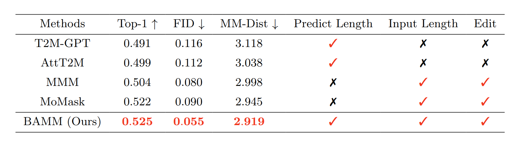

BAMM: Bidirectional Autoregressive Motion Model
Anonymous
High-quality Motion Generation, Enhanced Usability and Built-in Motion Editability
Performance comparison with SOTA methods. The low FID score means high overall quality of the generated motion, ensuring that its authenticity and naturalness is close to the real human movements. High R-precision (Top-1) and low MM-dist means accurate alignment between the generated motion and the text prompts. "Predict Length" denotes the ability to generate motion without prior knowledge of motion length. "Input Length" refers to the ability to take input length as a constraint. "Edit" indicates motion editability. MMM and MoMask require ground-truth motion length as input. Thus, the predicted motion length from the pretrained text-to-length estimator is adopted.

Compared to SOTA
Text to Motion 1:
"A person is performing lunges"
BAMM (our)
(correct lunges posture and hand posture while doing lunges is more realistic than ground truth)
Ground Truth
MoMask
(performing squad instead of lunges)
T2M-GPT
(performing squad instead of lunges)
MDM
(not performing lunges)
Text to Motion 2:
"the person was pushed but did not fall"
BAMM (our)
(Stronger correlation to text than ground thruth is observed, as it has seen a many similar text-motion relationships during training.)
Ground Truth
MoMask
(lack of "pushed" in motion)
T2M-GPT
(just walking and no presence of "pushed" in motion)
MDM
(stepping over something instead of "pushed" while walking)
Motion Editing
Motion Temporal Inpainting (Motion In-betweening):
Generating 50% motion in the middle based on the text “picks up something.” conditioned on first 25% and last 25% of motion of “A person is walking forward.”
BAMM (our)
(Realistic Motion)
Motion Temporal Outpainting:
Generating first 25% and last 25% of motion of based on the text. “A person jump in place carefully ” conditioned on 50% motion in the middle of motion of “A person walks forward..”
BAMM (our)
(Realistic Motion)
Motion Temporal Prefix Editing:
Generating 50% motion in the last half based on the text " A person walks forward up stairs and then climbs down." conditioned on the first 50% of motion of " A person gets on their hands and knees and crawls forwards, then stands up."
BAMM (our)
(Realistic Motion)
Motion Temporal Suffix Editing:
Generating 50% motion in the start based on the text “hands in fighting position while the left foot kicks aggressively up” conditioned on last 50% of motion of “the body is walking backwards carefully.”
BAMM (our)
(Realistic Motion)
Long Sequence Generation:
Generating long sequence motion by combining multiple motions as follow: 'A person is doing a salsa dance moving their legs and arms.', 'A figure sits on the chair.', 'a man jump forward.', 'A person punches as if they are boxing.', 'A person is stumbling while walking', 'A person is running forward in a long line.' Blue frames indicate the generated short motion sequences. Red frames indicate transition frames.
BAMM (our)
(Realistic Motion)
Length Diversity
Given a text prompt, BAMM generates diverse motion sequences along with diverse sequence lengths. Denoising models, such as MoMask and MMM, face challenges to generate motion with the sequence length that is different from the ground-truth length .
Text prompt : “the person crouches and walks forward.” (ground truth length: 196 frames).- BAMM: Realistic, diverse crouch-walk sequences; superior in motion fidelity.
- MMM: Sensitive to length variations; misses crouching, struggles with order.
- MoMask: Lacks walking and crouching; limited in motion diversity.
196 Frame Sequences (Ground Truth)
BAMM (our)
(More crouches in realistic motion)
184 Frame Sequences
BAMM
(performing crouches then walks, showcasing more realistic motion.)MoMask
(lacks crouching motion in the overall sequence.)MMM
(no walking motion present in the sequence.)156 Frame Sequences
BAMM
(a crouch followed by more pronounced walking.)MoMask
(motion sequence is reversed: starts with walking then crouches.)MMM
(lacks any crouching motion in the sequence.)More Results
Text to Motion:
BAMM (our)
person walks then steps over something.
BAMM (our)
A person walks in a circle continuously.
BAMM (our)
a figure walks forward in a zig zag pattern, stepping over something along the way.
BAMM (our)
The man is marching like a soldier.